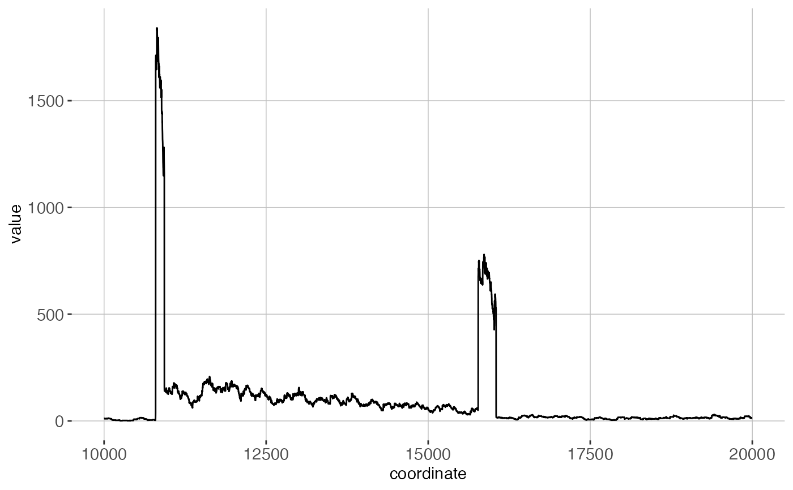
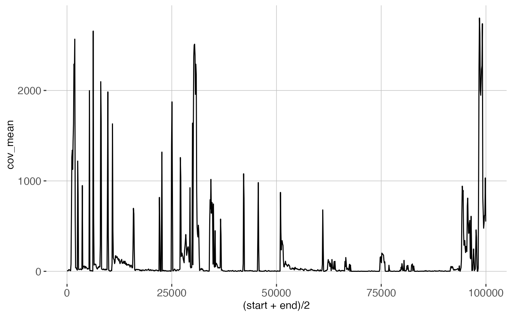
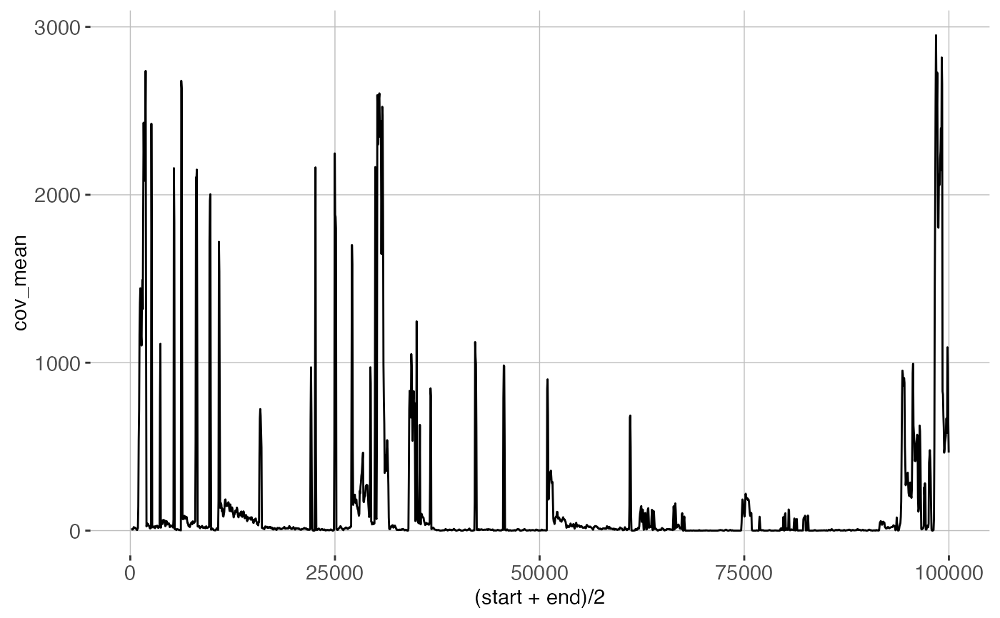

R/Coverage.R
Coverage.RdThis function returns an RLE / RLEList or data.frame
containing coverage data from the given COV file
COV files are generated by SpliceWiz's processBAM and BAM2COV functions.
It records alignment coverage for each nucleotide in the given BAM file.
It stores this data in "COV" format, which is an indexed BGZF-compressed
format specialised for the storage of unstranded and stranded alignment
coverage in RNA sequencing.
Unlike BigWig files, COV files store coverage for both positive and negative
strands.
These functions retrieves coverage data from the specified COV file. They
are computationally efficient as they utilise random-access to rapidly
search for the requested data from the COV file.
getCoverage(file, seqname = "", start = 0, end = 0, strand = c("*", "+", "-"))
getCoverage_DF(
file,
seqname = "",
start = 0,
end = 0,
strand = c("*", "+", "-")
)
getCoverageRegions(
file,
regions,
strandMode = c("unstranded", "forward", "reverse")
)
getCoverageBins(
file,
region,
bins = 2000,
strandMode = c("unstranded", "forward", "reverse"),
bin_size
)(Required) The file name of the COV file
(Required for getCoverage_DF) A string denoting the
chromosome name. If left blank in getCoverage, retrieves RLEList
containing coverage of the entire file.
1-based genomic coordinates. If start = 0 and
end = 0, will retrieve RLE of specified chromosome.
Either "*", "+", or "-"
A GRanges object for a set of regions to obtain mean / total coverage from the given COV file.
The stranded-ness of the RNA-seq experiment. "unstranded" means that an unstranded protocol was used. Stranded protocols can be either "forward", where the first read is the same strand as the expressed transcript, or "reverse" where the second strand is the same strand as the expressed transcript.
In getCoverageBins, a single query region as a GRanges object
In getCoverageBins, the number of bins to divide the given
region. If bin_size is given, overrides this parameter
In getCoverageBins, the number of nucleotides per bin
For getCoverage: If seqname is left as "", returns an RLEList of the
whole BAM file, with each RLE in the list containing coverage data for
one chromosome. Otherwise, returns an RLE containing coverage data for
the requested genomic region
For getCoverage_DF: Returns a two-column data frame, with the first column
coordinate denoting genomic coordinate, and the second column value
containing the coverage depth for each coordinate nucleotide.
For getCoverageRegions: Returns a GRanges object with an extra metacolumn:
cov_mean, which gives the mean coverage of each of the given ranges.
For getCoverageBins: Returns a GRanges object which spans the given
region, divided by the number of bins or by width as given by
bin_size. Mean coverage in each bin is calculated (returned by the
cov_mean metadata column). This function is useful for retrieving
coverage of a large region for visualisation, especially when the
size of the region vastly exceeds the width of the figure.
getCoverage: Retrieves alignment coverage as an RLE or RLElist
getCoverage_DF: Retrieves alignment coverage as a data.frame
getCoverageRegions: Retrieves total and mean coverage of a GRanges object
from a COV file
getCoverageBins: Retrieves coverage of a single region from a COV file,
binned by the given number of bins or bin_size
se <- SpliceWiz_example_NxtSE()
cov_file <- covfile(se)[1]
# Retrieve Coverage as RLE
cov <- getCoverage(cov_file, seqname = "chrZ",
start = 10000, end = 20000,
strand = "*"
)
# Retrieve Coverage as data.frame
cov.df <- getCoverage_DF(cov_file, seqname = "chrZ",
start = 10000, end = 20000,
strand = "*"
)
# Retrieve mean coverage of 100-nt window regions as defined
# in a GRanges object:
gr <- GenomicRanges::GRanges(
seqnames = "chrZ",
ranges = IRanges::IRanges(
start = seq(1, 99901, by = 100),
end = seq(100, 100000, by = 100)
), strand = "-"
)
gr.unstranded <- getCoverageRegions(cov_file,
regions = gr,
strandMode = "unstranded"
)
gr.stranded <- getCoverageRegions(cov_file,
regions = gr,
strandMode = "reverse"
)
# Retrieve binned coverage of a large region
gr.fetch <- getCoverageBins(
cov_file,
region = GenomicRanges::GRanges(seqnames = "chrZ",
ranges = IRanges::IRanges(start = 100, end = 100000),
strand = "*"
),
bins = 2000
)
# Plot coverage using ggplot:
require(ggplot2)
#> Loading required package: ggplot2
ggplot(cov.df, aes(x = coordinate, y = value)) +
geom_line() + theme_white

ggplot(as.data.frame(gr.unstranded),
aes(x = (start + end) / 2, y = cov_mean)) +
geom_line() + theme_white

ggplot(as.data.frame(gr.fetch),
aes(x = (start + end)/2, y = cov_mean)) +
geom_line() + theme_white

# Export COV data as BigWig
cov_whole <- getCoverage(cov_file)
bw_file <- file.path(tempdir(), "sample.bw")
rtracklayer::export(cov_whole, bw_file, "bw")